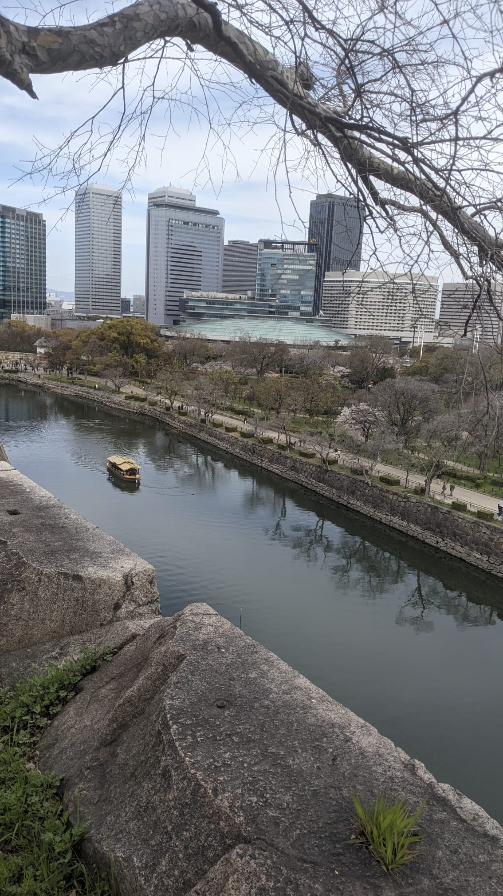
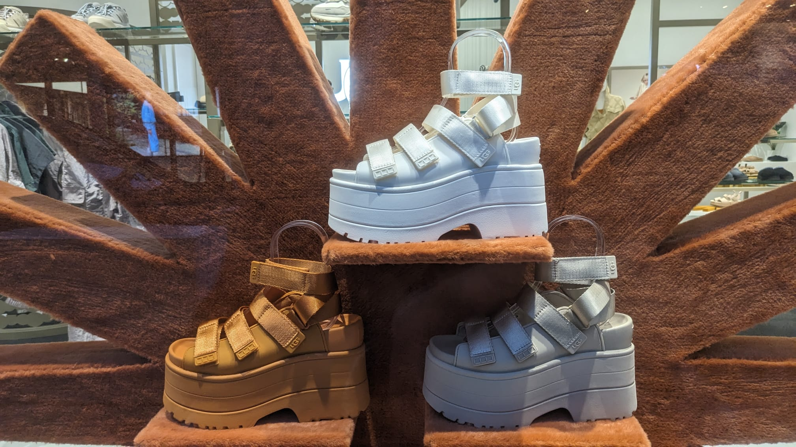
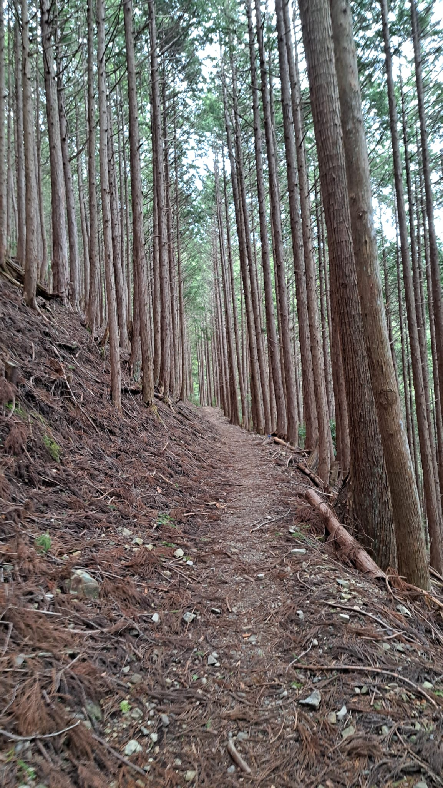
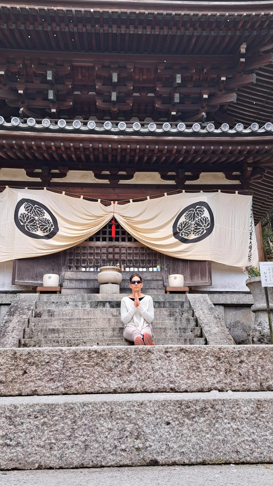
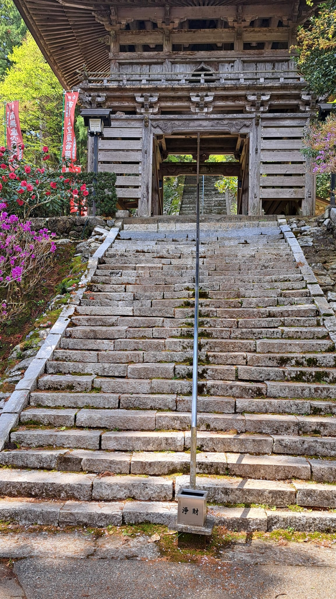
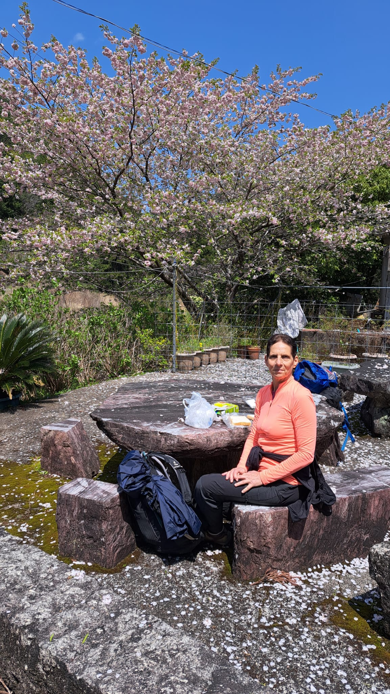
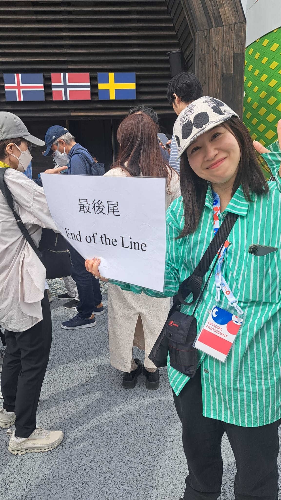
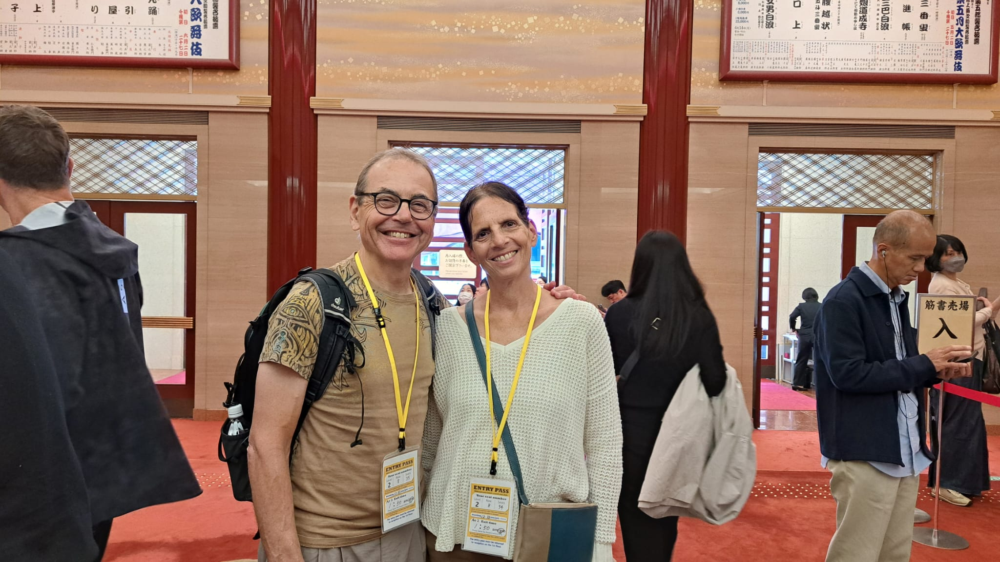
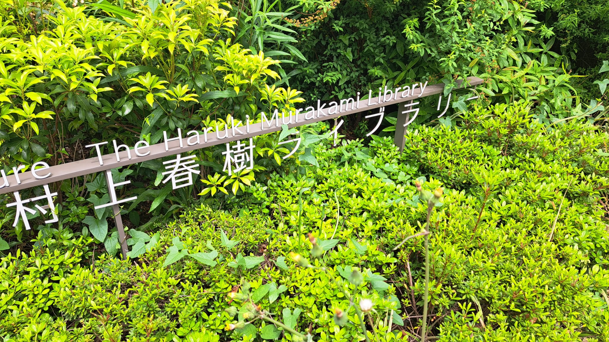

27.3-29.3
כבשנו את טוקיו בסערה או יותר מדויק -טוקיו הסתערה עלינו.
התמקמנו באחד מהרובעים המפורסמים שלה שנקרא שיבוייה .
שיבוייה גדולה ואינטנסיבית. נחילי אדם צועדים ברחובותיה לכל הכיוונים ובכל הגבהים - רחובות במפלס עילי, מפלס תחתי ומפלס ביניים. לכו תנווטו שם. אפילו גוגל מאפס איבד את דרכו בין כל המפלסים.
הבניינים בשיבוייה חדשים ונטולי סממנים היסטוריים. הרחובות מתהדרים במותגים הכי מפורסמים בעולם ובצד רחובות ראשיים סואנים נחבאות סמטאות יפהפיות שמתקשטות בחנויות בוטיק מעוצבות בטוב טעם.
מאז יום חמישי אנחנו גומעים מרחקים במרחבי העיר, מכווצים את שרירי הרגלים במפגש עם האספלט ונאבקים בג'ט לג רציני. ביום שישי ביקרנו במוזיאון שנקרא מורי. מוצגת שם תערוכה מעניינת שכולה מבוססת על אומנות שנעשתה באמצעות AI. איך לא.
באחת מהגנים הסמוכים ראינו את ניצני פריחת הדובדבן. פריחה יפה, אבל אם לומר את האמת... קצת over rated. (פריחת הסיגלון בגינה למטה בהוד השרון, לא פחות יפה😉)
האוכל כאן זה סיפור גדול. לארוחת בוקר מגישים מרק מיסו, דגים טריים ואורז עם ביצה לא מבושלת. נו, איך הצרפתים היו אומרים את זה בנימוס.... "צריך לאהוב"( הבהרה: בן ואני ממש אוהבים).
את היום השני שלנו כאן סיימנו בהופעת ג'אז במועדון מקומי קטן שבו היינו התיירים היחידים (כל השאר היו מקומיים מאופקים). וג'אז, כמו בכל עיר אחרת שבה ביקרנו בעולם, מתנגן באותה שפה אוניברסלית, אותם גינונים ואותן מחיאות כפיים במקומות הנכונים.
רק מילות הקישור והנגנים שונים. ( טוב, לא באמת הבנו את מילות הקישור).
היום היה יום קר וגשום אבל לא ויתרנו על שוטטות ארוכה באזור חדש בעיר וביקור במוזיאון הלאומי.
עכשיו מתכננים ארוחת ערב . מקווים שהשינה תתלבש עלינו טוב הלילה. לא פשוט הג'ט לג הזה..
מחר ממשיכים לאוסקה.
לא צילמנו הרבה תמונות, אז הפעם יותר מילים מתמונות. מבטיחים לשנות את המינון
אתמול בערב רצינו לאכול "כמו שצריך". חיפשתי מסעדה עם נטייה לצמחונות כדי שיהיה לאורה מבחר אפשרויות.
הגענו לארמון הטופו. מקום שטופו בייצור עצמי הוא גולת הכותרת בו. מה יכול להיות טוב יותר? הגענו למסעדה וגילינו שהיא מבוקשת מאוד. חייבים להזמין שולחן. למזלנו עמד שולחן להתפנות. חיכינו בסבלנות תוך כדי שיחה פילוסופית עמוקה ההולמת את גודל האירוע.
הושיבו אותנו בשולחן הפנוי היחיד, שהיה בחצר הקדמית. זו חוויה מיוחדת, לשבת במרחק של 50 מטרים מקו הרכבת שעובדת בתדירות של פעם ב3 דק'.
התפריט הגיע והתברר לנו שרוב המנות משלבות טופו עם בשר. טוב, לא נורא. מצאנו כמה מנות צמחוניות והזמנו.
ואז התחילו המנות להגיע לשולחן. למזלנו הבאנו את המשקפיים ויכולנו להבחין במנות הזעירות על כלי ההגשה היפיפיים. אני חושב שמנת הטמפורה קממבר היתה השיא. מזל שהזמנו 2 מנות כאלה. הקיסם שהיה נעוץ בטמפורה שקל יותר מהמנה. יצאנו מחייכים ורעבים😎
כמה רשמים ראשוניים על יפן
1. יש כאן הרבה מאוד יפנים!2. בטוקיו יש מעט ילדים. בשלטי החוצות יש פרסומות לעגלות וכסאות לרכב שמיועדות לכלבים (אמיתי, תראו בתמונות).
3. פריט האופנה הנשי השולט כאן הוא חצאית מיני עם קפלים (שדרוג של תלבושת אחידה של בית ספר או חצאית סקוטית) .
4. להיות יפני זה אסתטי והיגני.
כשציינתי בפני בן שבאופן מפתיע נראה שהם לא הטמיעו כאן ערכים סביבתיים. ( יש כלים חד פעמיים ומגבונים בכל מקום) . בן אמר אמממ....והסביר: בהתנגשות בין ערכי סביבה להיגינה, ההיגינה גוברת. ובן צודק.
5. אז בהמשך לסעיף הקודם. הדבר שהכי מרשים אותי ביפן זה השירותים. שלמות עיצובית וטכנולוגית: מושב רך מחומם, שטיפות מכל כיוון אפשרי, מוזיקה כדי לשמור על הפרטיות...בקיצור צריך ללחוץ על הכפתורים כדי להבין.(המחשה בתמונות).
30.3-1.4
טובבבבב, אז צריך להתגבר על הבושה ולהגיד את זה קבל עם ועדה: אני לא מסתדרת עם מקלות האכילה האלו! ניסיתי הכל - צפיתי בסרטונים, קיבלתי הדרכה מבן, התאמנתי במסתרים, רציתי, באמת שרציתי, ושום דבר לא עזר.
תכלס, ביננו, אם חושבים על זה ברצינות, מה הסיפור הזה עם המקלות?
בשביל מה האבולוציה סידרה להומוספיינס עשר אצבעות, בשביל שנאכל עם מקור?
למה הם צריכים להתחכם ולהתנשא עלינו?
טוב שמתי את זה כאן ו"הומקל" לי.
בחזרה למסע שלנו.
אנחנו באוסקה מאז יום ראשון. ממשיכים את החוויה האורבנית, שבן ואני לא מורגלים בה לאורך זמן, אבל לומדים אותה ביסודיות.
בן יתאר אותה בהמשך במסגרת המדור המיוחד שלו ואני אכתוב כאן עוד כמה מחשבות על יפן ועלינו.
1. כללי התנהגות:
מגבלת השפה לא איפשרה עד כה אינטראקציות מעמיקות עם המקומיים. אנחנו עושים מאמץ גדול לפענח בעצמנו את כללי המקום, שפת הגוף, וסממנים חברתיים/תרבותיים אחרים. זה נותן לנו כר נרחב להכללות ולפרשנויות מוטעות מנקודת מבט מערבית פשטנית.
אבל פה ושם נראה שפיצחנו משהו. שמתי לב למשל, שאני היחידה שמקנחת אף ברכבת (יש פה פריחת דובדבן ורק טבעי לחטוף אלרגיה קטנה). אז איך זה שרק אני עם הממחטות?
ההשערה שלנו היא שזה לא מנומס לקנח אף ברכבת. צריך לשים מסיכה ולמשוך באף בעדינות בשקט.
2. ההתנתקות מהארץ:
המרחק עושה את שלו ומאפשר לנו שלא להתעדכן באירועי היום במשך שעות ארוכות.
אבל המרחק גם מחדד ומעמיק את הכאב שאנחנו חווים בכל רגע נתון.
יש הרבה זמן לחשוב. העצבות בקימה של הבוקר עוד לגמרי שם וכל רעש קיצוני ברחוב מרעיד את הגוף.
3.שיחות של בן ושלי:
מדברים על תכניות לעתיד הקרוב והרחוק, מדברים על סדר הארוחה המסורתית היפנית, קצת היסטוריה ואקטואליה. מדברים הרבה על משפחה וחברים.
לא מדברים על רכיבות, לא מדברים על משימות( נו, טוב..קצת כן), לא מדברים על עבודה, לא מדברים על המצב בארץ. שותקים לפעמים.
המדור של בן👆🏻
הגענו מטוקיו עם ציפיות לא ספציפיות ולא מבוססות, ציפיות לחוויה פחות סואנת. ברור וידוע שאוסקה עיר גדולה ושהציפיות הנ''ל אינן רציונליות אבל כאלה אנו. אירציונליים. המלון הסמוך לתחנת נמבה נמצא בלב העניינים. יוצאים מפתח המלון היישר לזרם עצום של מליוני יפנים צוהלים. רשת של רחובות צרים מלאים במסעדות, בארים, חנויות מזכרות וכמובן Lawson ו-7-eleven. המון אדם.
נראה שהפעילות העיקרית היא אכילה ושתייה. מתחרה בה רק פעילות הצילום, עם ובלי מקלות סלפי.
גם אחרי שני ערבים של חוויה כזו, לא הפסקתי להתרשם. זה גדול.
ובינתיים בעולם הגדול מדד ה-s&p שובר שיאים שליליים, פברואר הגרוע ביותר מאז ככה וככה. אין על טראמפ שמשגע את העולם. סיימתי את "הקרב על אמריקה" של פיליפ רות וזה מדכא בערך כמו לקרוא הארץ או NYT.
אתרים: אתמול נסענו ברכבת לטירת אוסקה. חלק מהעניין הוא להתרשם מהמבצר העתיק. מבנה אם ונישא, מוקף חומה רחבה שמסביב לה חפיר מים רחב עוד יותר. חלק אחר הוא כמובן people watching. מעורר מחשבות. מהטירה ירדנו בהליכה בחזרה לכיוון המלון ב-namba. בדרך נכנסנו לחנות יודאיקה יפנית 🙂 עם בובות של סמוראים. מי לעזאזל קונה את הדברים האלה?
למה אני כותב namba ולא נמבה? בגלל שזה שם של מקום מחוץ לארץ ישראל? הייתי אמור לכתוב בכלל なんば?
ועכשיו, אני ברכבת היוצאת מאוסקה לקויאסאן. כן, כן, יוצאים מהכרך לכיוון ההרים. היום נלון במנזר בקויה ומחר, השכם בבוקר, נתחיל במסלול kohechi, אחד משבילי הצליינים של ה-kumano kodo



1.4
נקודת היציאה לטרק kohechi trail באיזור "קומנו קודו" היא העיירה קויה. הנסיעה מאוסקה היתה חוויה בפני עצמה. קטע ראשון ברכבת פרברים, החלפה לרכבת שנייה, החלפה לרכבת שמטפסת בזווית 40 מעלות ובעצם נמשכת על ידי כבל. קטע אחרון באוטובוס מקומי.עם הגעתנו לקויה, ירדנו מהאוטובוס בסמוך לאטרקציה המקומית -בית הקברות הגדול ביותר שהכרנו עד היום, קיים כבר 1200 שנה ובו 200,000 מצבות בדרגות שונות של מוזרות.
הוא ממוקם ביער קטן ולכל אורכו(כשני ק"מ) מפוסלות דמויות שעל ראשן כובע סרוג באדום וסינרים קטנים עם הדפסים.
השילוב בין עצי היער הגבוהים למצבות המקושטות בצבעים חזקים, יחד עם גוון של שמיים אפורים, הופך את המקום מסתורי וקסום.
בית הקברות עורר את רעבוננו ומצאנו מסעדת אודון קטנה ומעולה. טענו את הסוללות ויצאנו לחפש את המקדש/מנזר שבו נלון את הלילה.
את המקדש שנקרא נאן אין, מצאנו בקלות. מבנה גדול ומפואר שבפתחו שער גדול וחצר מטופחת עם עצים, שיחים גזומים, פסלונים בודהיסטים וקישוטי נייר תלויים בכניסה.
את פנינו קיבל אחד משלושת הנזירים המתגוררים במקדש שהורה לנו לחלוץ את נעלינו בחוץ, שלף פתק שעליו התנוסס השם בן בלום (מה שהבהיר לנו מיד שאנחנו האורחים היחידים במקדש), ודיקלם באנגלית טקסט שכולל את כל הפרטים שתיירים צריכים לדעת. בכך מיצה את אוצר המילים שלו באנגלית. כל שאלה שחרגה מהריטואל הרגיל (ולבן יש הרבה שאלות כאלו)לא קיבלה מענה.
פריט מידע זה נכון אגב, לכל המארחים שנפגוש בימים הבאים של הטרק.
בחזרה לקבלת הפנים שלנו.
הנזיר הוביל אותנו במסדרונות המקדש והצביע על מקומות שונים והסביר: פה האולם בו נקיים את הטקס מחר בשעה שש וחצי בבוקר 😮, פה האונסן שבו תוכלו להשתמש (תכף אחזור לאונסן) , פה נגיש לכם ארוחת ערב (בשש בדיוק) וארוחת בוקר(מיד אחרי הטקס, בשבע בדיוק) .
בסיום הסיור הגענו לחדר המיועד לנו. הנזיר הסיט את דלת ההזזה העשויה מעץ וריבועי נייר ולעיננו התגלתה הממלכה שמילאה אותנו בהתרגשות גדולה. יפן, ממש יפן . זו המסורתית, זו עם המזרונים על הרצפה, השולחן הנמוך וטקס התה. זו עם תלבושת היוקאטה. הקיצר, כל מה שראינו בסרטים וקראנו בספרי הילדות היה שם.
(וגם ווי פיי וטלוויזיה, אבל לא נתנו לזה להרוס לנו את ההתרגשות).
אז התרגשנו, ושתינו תה עם עוגיות יפניות ואז הגיעה השעה לחווייה הגדולה של הטבילה באונסן.
אז מה זה אונסן? אונסן הוא בית מרחץ יפני שבו יש בריכות מיים רותחים שנובעות מהקרקע, או סתם בריכות עם מיים רותחים.
יש כללים מאוד נוקשים איך להשתמש באונסן ומכיוון שההסבר על הכללים לא נכלל בנאום הפתיחה של הנזיר, נאלצנו לבקש את עזרתם של כמה מנועי חיפוש שיסייעו לנו וימנעו את המבוכה.
לאחר שבילינו את הלילה הראשון שלנו ביפן המסורתית, השכמנו לטקס לו ציפינו כל הלילה, אכלנו ארוחת בוקר דשנה, היינו מוכנים לגמרי לצאת לטרק בקומנו קודו(kumano kodo).
הטרק שלנו תוכנן חודשים רבים מראש. נדרשנו על פי ההנחיות לתפור את מקומות השינה לכל יום, לדרג את המקומות המועדפים עלינו ולהגיש את הבקשה לוועדה העומדת בראש קהילת קומנו קודו, שתפקידה היה לדון בבקשה ולאשר לנו את מקומות השינה. הועדה התריעה מראש שזה ייקח לה לפחות חודש לתת תשובה ובצורה לא אופיינית ליפנים התשובה התקבלה אחרי חודש ושבוע (סיפור אמיתי).
למה דווקא קומנו קודו? כי הוא יפה, כי הוא מביא אותנו לכפרים נידחים, כי הוא פחות מתויר מכל האחרים שבאיזור, הוא דרך צליינות עתיקה, וגם כי כל יום מטפסים 1000 מ' בשיפוע 15% ואחר כך יורדים 1000 בשיפוע דומה. זה מה שעושה לנו את זה.
הקונספט של הטרק הוא לעבור מכפר לכפר דרך ההרים. כל בוקר מתחיל בעליה משופעת וארוכה לפס או לפסגה של אחד ההרים, ובחצי השני של היום יורדים בירידה תלולה וארוכה עוד יותר.
המסלול עובר ביערות גדולים של ארזים מדוגמים- רזים ותמירים המסודרים בסדר מופתי. עלי הארזים שנופלים על הקרקע מרפדים את ההליכה בשבילים.
כל יום מחליפים את סוג האירוח. מנזר בודהיסטי, מלון כפרי, אירוח ביתי. נהנים מארוחות יפניות מסורתיות ברמה גבוהה
ומהאונסנים המדוגמים.

ביום השני של הטרק הזדמן לנו סוף סוף לשוחח שיחה ארוכה עם שתי מקומיות.
זה קרה בארוחת הערב במינשקו מנדקורו - אירוח ביתי משפחתי של אמא ובן שיודעים ביחד 15 מילים באנגלית ואף לא מילה אחת בעברית. מה גם שאין להם אפשרות לפנות לד"ר גוגל טרנסלייט, כיוון שהכפר הנידח אינו מחובר לרשת סוללרית.
ניסינו לדמיין איך תתנהל השיחה בארוחת הערב. ראינו את השולחן ערוך ל-4 אנשים ולהפתעתינו, מצאנו שם את אנקו וטאמקי החמודות. אלה שפגשנו בבוקר עם היציאה למסלול. מסתבר שיש חדר נוסף כאן במינשוקו והן מתארחות בו לצידנו.
ארוחת הערב היתה טעימה ומעניינת. שיפרנו את נימוסי השולחן היפנים שלנו, למדנו עוד על התרבות והחלפנו חוויות. זכינו גם להקרנת סרט דוקומנטרי על המינשוקו "שלנו". סרט שהופק לפני כ-8 שנים ובו רואים את חיי המארחים שלנו ומשפחתם. מעניין.
בבוקר לפני היציאה אכלנו ארוחה ב-6:30 עם ביצי משק טריות מהמשק של מארחינו, הצטלמנו ויצאנו לכבוש את ההר שמלפנינו בחיוכים גדולים.
את היום השלישי סיימנו באירוח ביתי מסוג אחר שיתרונו הגדול הוא הנוף עוצר הנשימה שנשקף מחלון החדר והאונסן היפה ביותר בו היינו עד כה.
מחר היום האחרון והמאתגר של הטרק.
לילה טוב

1.4-6.4 קומנו קודו
לסיכום מסלול ההליכה ולכבוד חג האביב הקרב ובא - תמונות של פריחה בעמק, ונוף של הרים.ללא מילים והסברים

6.4-10.4 אוסקה וקיוטו
החזרה מהטבע לעיר תמיד קשה לנו. מעין נפילת מתח ותחושת ריקנות.לא פשוט לה לעיר להתחרות עם עוצמות הטבע.
כך למשל להיתקל במקדש ענק בסיום מסלול הליכה מאומץ בהרים, זו חוויה מרגשת יותר מאשר להיגרר בתוך נחיל של תיירים שמפלסים את דרכם בצפיפות לראות מקדשים בקיוטו.
המקדשים אמנם מרשימים באותה מידה, אבל החוויה היא שונה.
אז חזרנו מהכפרים לאוסקה לשלושה ימי עיר מלאים והמשכנו לחקור את העיר. הפעם בחרנו להסתובב ברובע קיטה המשלב בין גורדי שחקים המיועדים למשרדים ועסקים לבין אזורי מגורים בבנייה מרקמית (נמוכה)וסמטאות קטנות ויפות. נשבינו מיד בחכמה התכנונית של המקום - עירוניות במיטבה.
כל חלק בתוך הרובע הגדול מקושר לחלק אחר דרך גריד של שבילים, כבישים, מפלסים וגשרים שביניהם משתלבים בצורה חכמה תחנת רכבת גדולה, קווי מטרו, מבני משרדים, מבני ציבור, מבני מגורים ומרכזי קניות. הכל בעיצוב מודרני שהושקעה בו הרבה חשיבה על הפרטים הקטנים.
קישוריות זה שם המשחק בתכנון עירוני וברובע קיטה זה ממומש בצורה האופטימלית.
התיאור כאן הוא רק חימום לסיפור הארכיטקטוני המרכזי של הרובע -
Umeda sky building
מדובר במבנה רב קומות מרשים שבנייתו ההסתיימה בתחילת שנות ה-90.
המבנה שתכנונו החל ב- 1988 היה חלק מפרוייקט עירוני שאפתני שנקרא City of air והיה אמור לכלול 3 בנינים המחוברים בגינה צפה באויר. בסופו של דבר הפרויקט הצטמצם לשני בניינים בלבד, כנראה עקב המשבר הכלכלי שפקד את יפן באותן שנים.
גובהם של שני הבניינים 173 מטר. בגג הבניין מרפסת תצפית פתוחה (360 מעלות) שבמרכזה לכודה בין שני הבניינים גינה צפה שתחתיה נפרשת העיר כולה.
הבניין עוצב ותוכנן ע״י Hitoshi Hara (שעיצב גם את בניין תחנת הרכבת בקיוטו.) התכנון המוצע של של היטושי זכה במסגרת תחרות אדריכלים שערכה העירייה.
העלייה לתצפית נעשית דרך מדרגות נעות בזוית חדה שיוצרת חוויה יחודית של תנועה לחלל לא נודע.
התוצאה של הפרויקט מרשימה, אך לא פחות מזה מפתיעה הדרך בה הוא נבנה.
בסרטון שצפינו בו בגלרית התצפית מתואר תהליך הבנייה:
רק לאחר ששני גורדי השחקים הועמדו על רגליהם, הונפה מלמטה למעלה הקונסטרוקציה שמדמה גינה צפה או גינה תלויה באויר.
מדובר בקונסטרוקציה כבדה מאוד (1040 טון) שהונחה על הקרקע
והנפתה נעשתה באמצעות כבלים שמשכו אותה כלפי מעלה בקצב של כ-35 ס"מ לדקה.
תהליך ההרמה נמשך כשבע שעות עד שהגינה התלויה באויר התמקמה בין שני הבניינים בגובה של 150 מטר.
בסרטון נראים תושבי העיר מסתובבים ברחובות הסמוכים עם הראש מוטה כלפי מעלה ומביטים בתמהון במחזה הנדיר.
זו הפעם הראשונה בעולם ששיטה זו יושמה להרמה של קונסטרוקציה בסדר גודל כזה.


ביום השני נסענו לקיוטו. עיר שכולה מבוססת על תיירות בזכות יופיה והמקדשים המרהיבים שבה. לא היינו שם לבד. בשביל זה היה ביקור שני. אליו החוויות והזכרונות שליוו אותנו ברחובות קיוטו:
קיוטו אז והיום
הביקור הקודם שלי בקיוטו היה באביב 1987. 38 שנים חלפו ומחקו את רוב הזכרונות. מה שנותר חרוט בזכרון הם זכרונות כלליים ולא אמינים ושני אירועים מיוחדים.אני זוכר שקיוטו היתה כבר אז תיירותית מאוד, מוצפת התיירים בכל הגילים. נדמה לי שהיה פחות צפוף והרבה יותר שליו. נשמע הגיוני. ישנתי אז בגסטהאוס באולם מרוצף טטאמי, לצד חבורות של צעירים. כולנו בתקציב של תפרנים, אוכלים את מה שהכי זול. קערות של סובה בבוקר ובערב. בלילה האחרון בקיוטו "חגגנו" בסושי בר הכי זול שמצאנו. וזה היתה ארוחה נדיבה לפני הפרידה מקיוטו. התנהלנו לנו לאיטנו אל הגסטהאוס, וכשהגענו אליו, ראינו שמשהו לא כרגיל. המולה גדולה, וואנים וצוותי טלוויזיה. נראה כמו זירת רצח. אבל במחסומים שבכניסה אנשי הבטחון לא מנעו מאיתנו להיכנס. מסתבר שהגסטהאוס שלנו אירח תכנית טלוויזיה פופולרית בתחנה המקומית ותוך דקה מצאתי את עצמי מתראיין בשידור חי. היה נחמד. כאשר הסתיים הראיון הקצר נפתחו דלתות האולם ופנימה פרצו מלצרים נושאי מגשי סושי ענקיים. עכשיו, אל אף הבטן מלאה, לא ויתרנו על הסושי האיכותי והוכחנו נחישות עד שהתפוצצנו🙂
זכרון מסוג קצת אחר הוא "גן הריקנות" במקדש ריואן ג'י. זה גן שמורכב מ-15 אבנים המוצבות בשדה קטן של חצץ לבן. האבנים ממוקמות כך שמכל נקודת תצפית סלע אחד מוסתר מן העין. אני זוכר שזהו מקום מושלם למדיטציה. הפעם לא הספקנו לבקר שם. אולי במקרה זה עדיף כך. כנראה שהמקום מאוד פופולרי והמולת המבקרים היתה מקלקלת את הזכרון היפה.
האם הפעם הבאה תהיה בעוד 38 שנים?

מחר אנחנו יוצאים למסלול הליכה של חמישה ימים באי שיקוקו.
נ.ב. לפעמים צריך להודות בטעויות...
אני חייבת התנצלות לעם היפני ולעצי הדובדבן.
פריחת הדובדבן היא לא over rated בכלל. היא פשוט משגעת.
11.4-16.4 טוקושימה שיקוקו
בחמשת הימים האחרונים טיילנו באי שיקוקו. צעדנו בדרך העולים לרגל (pilgrims) שנקראת ביפנית הנרו (henro). ההנרומחבר בין 88 מקדשים במסלול מעגלי "סובב שיקוקו" ומקומות קדושים נוספים שממוקמים בהרי האי שיקוקו.
מקומיים וזרים, צעירים ומבוגרים, צועדים לאורכו ומתקדמים בכל יום ממקדש למקדש לפי הסדר. הנועזים עושים את המסלול בכיוון ההפוך🙃
זה מעין שביל ישראל במתכונת רוחנית, שאורכו 1200 ק"מ. ניתן להשלים אותו בתוך חודשיים -שלושה (פגשנו אנשים מבוגרים שאמרו שהשלימו שתי הקפות ושלוש).
אנחנו דגמנו רק שבעה מהמקדשים ועל כולם אפשר להגיד טוטמו אוצוקושי! (יפים מאוד!)
לאורך כל ימי הצעידה הארוכים טיפסנו על ההרים, שמענו את שירת הציפורים המקומיות שאין דומה לה, היינו קשובים ללחשי רוחות היער שנשבו בענפי העצים, שאפנו אוויר צלול וקר, וגם חווינו יום גשום וסוער.
חלפנו על פני שדות אורז מבוצבצים, ראינו איכרים חרוצים שמיהרו להשלים את שתילת האורז בזמן, והקשבנו בתמיהה לקרקור החזק של הצפרדעים שהסתתרו בגומות של הבוץ מסביב לשדות.
לאורך כל הדרך ליווה אותנו הנהר מתחתינו, משמאלנו, או מימיננו ואז... ביום האחרון של המסלול, נשפכנו עם הנהר לתוך האוקיינוס והתמזגנו עם עיירת נמל ציורית שיושבת בדיוק על החיבור בין הנהר לאוקיינוס. מקסים! כאן העברנו את הלילה האחרון.
המסלול זימן לנו מפגשים אנושיים רב לאומיים עם נציגים מאוסטרליה, גרמניה, שוויץ, דנמרק, טיוואן, סין, ויפן כמובן. היו לנו שיחות עם אנשים מעניינים שעוררו אצלנו מחשבות עמוקות.
המפגש הראשון היה עם אבא ובת שהגיעו לחופשה מאוסטרליה. היא ממלבורן והוא מאדלייד. הם לנו איתנו באותה ביקתה וזכינו לשתי ארוחות ביחד, שיחות מעמיקות, ואפילו להכין בצוותא קופסת lunch box יפנית למהדרין בהדרכת המארחים.
הבת מורה בתיכון לקרמיקה ועיצוב. נשמע שהיא אוהבת את העבודה שלה. נמצאת עכשיו בחופשה מבית ספר (באוסטרליה, למדנו, אין חופשה אחת גדולה מרוכזת , אלא חמש חופשות מפוזרות לאורך השנה של שבועיים כל אחת). בזמנה הפנוי לומדת יפנית ואף הצליחה לתקשר בכמה מילים בודדות עם המארחים.
היא הבכורה במשפחה. אחותה היא אמנית ועל אחיה הצעיר אנחנו לא יודעים דבר מלבד שהיה לו ערב קשה, כי הנבחרת רוגבי שהוא אוהב הפסידה.
האבא , טיפוס מעניין, נוצרי אדוק, פעיל בפעילויות קהילתיות וחברתיות ברמה ארצית, כמו למשל שיקום נוער בסיכון ושיקום אסירים באמצעות מתודולגיות שונות ( בין השאר רוחניות ומדיטטיביות) בניסיון להקנות להם אופק ותקווה ולא מטעמים מסיונרים, לדבריו. (הוא מאוד עסוק, אומרת הבת, וחוזרת על זה מספר פעמים)
אבא שלו היה טייס קרב שהפציץ כל הדרך עד ליפן וממש לפני שהתחילו לשטח את יפן נפלו שתי פצצות אטום והמלחמה הסתיימה. דוד שלו היה מושל נגסקי בשנים שלאחר המלחמה.
וואחד היסטוריה משפחתית.
את חג הפסחא יחגגו בחווה באוסטרליה עם המשפחה המורחבת.
נפרדנו מחברינו האוסטרליים בצילום קבוצתי מחויך עם המארחים האדיבים שלנו ומשם המשכנו לכיוון ההרים.
הבחור הצעיר ביותר שחבר אלינו באמצע המסלול הוא איצ'ן מטיוואן. איצ'ן הוא בן 24, הספיק ללמוד תכנון עירוני באוניברסיטה המקומית ולשרת ארבעה חודשים בצבא הטיוואני (שירות חובה).
עכשיו הוא בטיול הגדול וכשיחזור בקרוב לטיוואן יתחיל לעבוד בחברה שעוסקת בשימור סביבתי. התשוקה האמיתית שלו היא לא אחרת מ"תכנון עירוני".
כאשר איצ'ן הבין שאנחנו מישראל, הוא סיפר לנו בהתרגשות: "אתם לא מבינים, הלב שלי התחיל לדפוק חזק! אני כל כך נרגש!! אני אוהב לקרוא ספרים ולא מזמן קראתי ספר על הסכסוך הישראלי פלסטיני. ספר שנכתב לפני עשרים שנים. קשה לתפוס שעברו כל כך הרבה שנים וזה עדין לא נפתר"...
הוא סיפר גם על שיחות שהיו לו עם שני חיילים ששירתו איתו בצבא שנסובו סביב הנושא על הבאת ילדים לעולם. הלחיים שלו נהיו אדומות מכעס כשאמר ששני החיילים אמרו שלהביא ילדים לעולם זו השקעה טובה (good investment).
"איך הם יכולים לחשוב בצורה כזו" הוא רטן, "זו תפיסה מיושנת שסבא שלי החזיק בה." "ואיך בכלל אפשר להביא ילדים לעולם שיש בו כל כך הרבה חוסר ודאות? ".
על המאבק המתמשך בין סין לטיוואן הוא אמר בפסקנות: "מאבק מיותר, הם כבר לא צריכים להילחם בנו". נודה שלא בדיוק הבנו למה התכוון. נותרנו עם פרשנויית שונות.
כשנפרדנו מאיצ'ן הוא נתן חיבוק גדול לבן ולחץ את ידי בעדינות. לפני כן הוא ביקש לוודא שאנחנו גרים במקום בטוח בישראל שאין בו מלחמה.
הוא חילק גם חיבוקים גדולים למארחים- מחווה מאוד לא אופיינית לתרבות המקומית.
איצ'ן נגע לליבנו בשל נפשו הסוערת והמבולבלת.
איש צעיר נוסף שפגשנו בדרכנו הוא לוקס הפילוסוף הגרמני. לוקס הקפיד על תלבושת מסורתית של העליה לרגל, לבוש לבן, מקל ותיק קטן מסביב למותניו וכובע רחב שולים שעליו אימרות בודהיסטיות שונות כמו - "בגלל שאתה כלוא בתשוקות שלך, אתה לא יכול לברוח משלושת מישורי התודעה ולהשתחרר מהעולם המוחשי."
על הגב נשא לוקס תרמיל כבד שכלל את כל הציוד הנחוץ לשינה באוהל.
לוקס התעניין מאיפה אנחנו, ובתגובה לתשובתנו קבע: "אז הגעתם להירגע במקום המתאים ביותר". הוא סיפר שהוא גר בפרנקפורט. לפני כמה שנים התגורר ביפן כשנה ולמד כאן לימודי ספרות יפנית.
הוא דיבר בהתלהבות על היצירתיות של כתיבת קליגרפיות- "כל התנסות יוצרת דבר חדש" והעיד על עצמו כמי שהטמיע את הפילוסופיה הבודהיסטית לחיי היום יום.
באותה נשימה הוא התלונן על המצב בגרמניה. על החיים שנהיו יקרים באופן בלתי נסבל ועל התפיסות הלאומניות המתפשטות שמחזירות את גרמניה הרבה שנים אחורה.
את לינדה מדיסלדוף פגשנו בלילה האחרון. לינדה, אשת IT, שלחה את בעלה לצרפת, השאירה את שתי בנותיה בגרמניה לחגוג בבית ריק, ויצאה לבדה לטרק של שבועיים בהנרו, כי זה מה שהיא אוהבת לעשות. התחברנו איתה בקלות וניהלנו שיחות על טיולים, משפחה, קצת עבודה, ועל היעדים הבאים.
המפגש הקצר והנוקב עם מדענית ממינסוטה (שלא שאלנו לשמה) התרחש במנזר יפהפה שאליו היינו צריכים לטפס יותר מ- 1000 מטר.
המדענית התעניינה מאיפה אנחנו ואמרה בפסקנות: "לכם ולנו יש הרבה התמודדויות בתקופה האחרונה".
לאחר מכן עיוותה את פניה ואמרה: "את נתניהו אפשר לשנוא או לאהוב, אבל הוא לפחות לא טיפש כמו הנשיא שלנו".
אחרי שהסכמנו שבאנו לכאן כדי להירגע ולשכוח מהצרות, פתחנו בשיחה פילוסופית קצרה על הכיוון שבו העולם שלנו הולך.
המדענית החלה לדמות את העולם לשיירה של חרקים שהגיעה למקום שממנו יהיה לה קשה לחזור. כדי לעזור לנו לתרגם את שק הדימויים שהיא נושאת באמתחתה פרטה והסבירה - "זה כמו ילדים שהגיעו לדרך הרעה ועכשיו צריך להשקיע מאמץ אדיר כדי להחזיר אותם לדרך הטובה".
הבשורה הטובה היחידה שעלתה מהשיחה נגעה למסלול ההליכה שעוד נותר לנו לעשות באותו היום. מעכשיו יש בפנינו רק ירידה אמרנו... ופתאום הבנו את המשמעות של המילים.
מיד, כדי להתנחם, עודדנו את עצמנו שמחר עם שחר בוא תבוא העלייה.
היום המשכנו לאימאברי, הצד השני של האי. מחר הפתעה😁



17.4 אימאברי, טשימה, הירושימה
הפרידה מהכפרים וההרים לעבר הערים הגדולות נעשתה בהדרגה. נותר לנו לבלות יום נוסף בצידו השני של האי שיקוקו במקום שנקרא אימאברי. זה היה יום בלתי נשכח.
אימאברי היא עיירה שכוחת-אל שאין סיבה בעולם להגיע אליה מלבד סיבה אחת חשובה... היא מהווה נקודה אסטרטגית ממנה ניתן לצאת למסע אופניים חוצה איים באורך של כ- 70 ק"מ, מסלול שעובר דרך שלושה גשרים ענקיים ועוד כמה פחות גדולים המחברים בין שרשרת איים. בסופו מגיעים לאי המרכזי של יפן - הונשו
בן הפתיע אותי כשהודיע למוכר בחנות האופניים באימאברי שאנחנו רוצים לשכור שני זוגות אופני כביש.
אופני כביש? אני? מעולם לא רכבתי על כאלו. מה פתאום אופני כביש?הגלגלים דקיקים, המנח של הגוף כפוף, שילדה קלה כמו נוצה, איך רוכבים על הדבר הזה?
"תבחרי בין אופניים חשמליים לאופני כביש" הוא אמר נחרצות, "אלה שתי האפשרויות היחידות שיש כאן"! "אוקיי... מלמלתי בהיסוס "שיהיה אופני כביש".
וכך היה, יצאנו עם שחר למסע משגע בין איים רכובים על אופני כביש מדוגמים, שש שעות של שכרון חושים בגוונים של כחול וירוק ושרירים שזועקים "הצילו" וכל זעקה רק מוסיפה הנאה וסיפוק.
את הטיול ליפן בן תכנן חודשים לפני נסיעתנו. הוא ליקט כל פרט מידע חיוני, למד ביסודיות את מפת האיים ובחן את היעדים האפשריים. הוא גם נרשם לכל האפליקציות האפשריות כדי ללמוד קאנג'ית ובמשך חודשים התגוררה אצלנו בדירה חברה בוטית יפנית ששאבה את מלוא תשומת הלב של בן. לנוגה ולי היה סימן מוסכם עם הראש שמשמעותו הייתה - "הוא שוב עם היפנית שלו".
השקדנות וההשקעה הובילו לתכנון מדוקדק של המסע שלנו. ובתוך כל המערך הזה הצלחנו להשחיל בספונטניות יום אחד שלא תוכנן מראש.
זה קרה כשנפגשנו בארוחת הערב עם האוסטרליים. במהלך השיחה ושיתוף החוויות גרייס( הבת) אמרה שהיא מאוד ממליצה לנו לנסוע לאי האמנות טשימה.
מדובר באי קטן שיש בו מוזיאון אמנות ייחודי ועוד כמה מייצגי אומנות מודרנית שמפוזרים לאורכו.
אמרנו, יאללה, נשמע טוב, למה לא? והחלטנו לקפוץ לשם בדרך מהירושימה לאוסקה.
המבצע הצריך קימה מוקדמת בבוקר על מנת להגיע בזמן למעבורת הראשונה שיוצאת אל האי. קטן עלינו.
קמנו ב-5:30, גררנו מזוודות ברחובות הירושימה שרק מתחילים להתעורר, עלינו על רכבת השינקאנסן הנכונה, החלפנו לרכבת מקומית, והגענו למעבורת בדיוק בשעה היעודה. מאותו רגע הכל התחיל להשתבש.
ערפל כבד שיתק את תנועת המעבורות, השייט בוטל עד שהקפטן יחליט שכבר לא מסוכן. נאמר לנו ביפנית שלא משתמעת לשתי פנים שהמעבורת הבאה תצא רק ב-11:00. שעתיים וחצי המתנה? סבבה אמרנו, אין בעיה. יש לנו את כל היום. העיקר שלא נפספס את החוויה המדוברת. היינו נחושים לבקר במוזיאון שעליו נכתב בכמה בלוגים " מוזיאון שהוא אומנות בפני עצמה. אסור לפספס"!
אז חיכינו בסבלנות בבית קפה חמוד בנמל שבו כל הזמנה של ארוחת בוקר הונחה על השולחן כ-30-40 דקות מרגע שהוזמנה. (ביחד איתנו נתקעו בערפל עוד כמה מאות אנשים). אבל למי אכפת, אנחנו בחופש והזמן הוא אינסופי.
השעה 11 הגיעה לבסוף. המעבורת יצאה לדרכה בזמן, וכשהגענו לאי מיהרנו לעמוד בין הראשונים ביציאה, במטרה להגיע במהירות האפשרית לחנות השכרת האופניים החשמליים. חקרנו ולמדנו מראש, שמספר האופניים החשמליים המושכרים באי הוא מוגבל ושזו הדרך הטובה ביותר להתנהל בו.
התושייה הסתברה כמועילה. הצלחנו במשימה זו הצלחה מסחררת. שכרנו אופניים חשמליים והשארנו טור של אנשים מאוכזבים מאחורינו שעבורם לא נותרו זוגות אופניים.
מבושמים מהישגנו רכבנו למוזיאון הנכסף. שם בעומדנו בתור הסתבר למורת רוחנו, שכיוון שלא עשינו הזמנה מראש, לא נוכל להיכנס למוזיאון. לא עזרו כל תחנונינו ותרוצינו המשכנעים, המארחת היפנית אמרה באסרטיביות, "הייתי מאוד רוצה להכניס אתכם, אבל אני לא יכולה". נקודה. סימן קריאה!
אז היינו מאוכזבים לרגע, אבל רק לרגע, ומיד עודדנו את עצמנו שהכל טוב, יש עוד הרבה דברים יפים לראות באי והרי יש לנו אופנים חשמליים.
אז קפצנו ממיצג אומנותי אחד לאחר, התעכבנו במיוחד במיצג של סלי הכדורסל שסחף אותי בנוסטלגיה ענוגה עשרות שנים אחורה. ברוב המיצגים התקשנו להבין את מהות היצירה ואת כוונת היוצר. אבל מזג האויר היה מושלם, והים הוא ים והשלווה זרמה בכל מקום. אקונה מטטה. ואז... בטיפוסנו עם האופניים באחת מעליות האי ושיר מתנגן בליבנו, עצר אותנו שוטר, שנדמה שהוצנח לשם משום מקום, ממש במיוחד לכבודנו. השוטר ביקש את הדרכונים ורשם לנו אזהרה על כך שרכבנו זו לצד זה ולא כפי שנדרש בטור בצד הכביש.
אח, איזה יום זה היה.
מחשבות של בן על הירושימה
משיקוקו המשכנו לגיחה קצרה בהירושימה הסמוכה.למה בעצם החלטנו לבקר בהירושימה? לא לשם שיטוט בנזקי הפצצה. העיר הרי נבנתה מחדש ונותר רק איזור המוזיאון ופארק השלום הסובב אותו. לא לשם מפגש עם הניצולים. 80 שנים חלפו מאז ולא נותרו רבים שיוכלו לספר (ביפנית). אפשר פשוט לקרוא באינטרנט, להיכנס לאתר המוזיאון ועוד עשרות אתרים העוסקים בנושא ולקבל מידע מפורט. אז מה הסיבה לבקר פיזית?
טיילנו בשיקוקו. צעדנו במסלול העולים לרגל ופקדנו עשרות מקדשים לאורכו. לא יכולנו לחוות את הטיול הזה דרך המסך אבל ללמוד על זוועות פצצת האטום בהירושימה ובנגסקי יכולנו גם לחוות מהכורסה בסלון או בקרון הרכבת בדרך לאוסקה.
אז כן, זה נכון. בביקור הפיזי במוזיאון , ספגנו את המסר המועבר שם בכל הדרכים. מסר של שאיפה לשלום, מאבק משותף של המין האנושי נגד מלחמות וסכנות הנשק הגרעיני. התרגשנו, כאבנו, והתעוררה בנו גם דרגה מסויימת של ציניות כשהשוונו את האידיאלים שהאתר מבטא למה שמתחולל היום ברחבי העולם. אבל זה לא הדחף הפנימי שהביא אותנו לכאן.
הבנתי פתאום שבעצם המוזיאון הזה הוא מקדש לערכים שלנו וזו היא העלייה לרגל החילונית, ההומנית, הפציפיסטית שלנו. המעשה הזה שכרוך בהשקעת זמן ומשאבים, הוא צורך שלנו להפגין את הערכים שלנו ואת המחוייבות שלנו אליהם. ואת זה קשה יותר לעשות מהכורסה ולא משנה באיזה מקום בעולם.
.
הירושימה 2
אחרי שמתרגלים לשם של העיר, הירושימה, הירושימה, הירושימה אהובתי, מפסיקים לחוות אותה כאתר ההפצצה המפורסמת ביותר בהיסטוריה האנושית ומתחילים לחיות את העיר התוססת והנעימה. יש בה המולה של עיר, חיים תוססים, מסעדות ובתי קפה. אין בה את העומס והצפיפות ולא את המסות של טוקיו ואוסקה. עיר קלילה ונוחה.חדר המלון היה מרווח יחסית בזכות מיטת הקומתיים. חוויה שמזמן לא חווינו.היה מעניין והיה נעים ולמחרת השכם בבוקר יצאנו כבר ליעד הבא.
19.4- 26.4
אוסקה, נארה, קובה, טוקיו
אלה הימים האחרונים של המסע שלנו והמחשבות מתחילות לנדוד לארץ, עם כל המשתמע מזה. את השבוע וחצי האחרון בילינו בערים הגדולות וספגנו עוד ועוד חוויות:
ביקרנו בפארק האיילים המתוייר בעיר נארה תוך שוטטות ברחובות הסמוכים. גולת הכותרת היתה ארוחה במסעדה מפונפנת, כוכב מישלן. חוויה קולינרית ותרבותית.
למחרת קפצנו לקובה לפגוש את טלי , מכרה שמתגוררת כבר עשר שנים ביפן. טלי עזרה לנו בהזמנת מקומות לינה בשיקוקו בהם הדרך היחידה להבטיח מקום לינה היא בשיחת טלפון ביפנית. בילינו איתה בוקר אביבי בגנים הבוטניים היפים של קובה שההגעה אליהם נעשית עם רכבל, וקינחנו בתה קר בסניף הסטארבקס המקומי שמאכלס בית של מתנחלים הולנדיים שמזמן כבר נטשו את האיזור.
למדנו רבות מטלי על החיים ביפן. הופתענו למשל ללמוד שעד לפני כ-5 שנים לא היו ליפנים מספרי זהות אישיים ולא תעודות זהות. המספר הזה שאנחנו קיבלנו ביום בו נולדנו, לא היה קיים עבורם. יפן ממשיכה להיות מרתקת ומסתורית.
היה בוקר נעים מאוד.
למחרת ביקרנו באקספו 2025 באוסקה. תערוכה עולמית שמתקיימת אחת לחמש שנים ונפתחה החודש. בתערוכה צפויים לבקר מליוני אנשים מרחבי העולם. עשרות מדינות מציגות שם. גם ישראל.
הסתובבנו שם שעות ולא הפסקנו להתרשם מהמבנים והמתקנים העצומים שניבנו שם לכבוד התערוכה, ומתחנת הרכבת שהוקמה וחוברה לרשת הרכבות בתוך זמן קצר. כל זה מתקיים על אי מלאכותי שהוקם במפרץ אוסקה.
אחרי כל החויות האלו ארזנו את עצמנו ובמהירות הבזק, בקצב השינקאנסן, הגענו לטוקיו. התחנה האחרונה במסע היפני הנוכחי.
נארה

קובה

אוסקה אקספו 25

23.4 - 27.4 טוקיו
את הבוקר הראשון בטוקיו התחלנו בריצת בוקר בפארק אואנו הסמוך למלון בו השתכנו. לאחר מקלחת וארוחת בוקר, יצאנו שוב לכבוש את העיר.יש חנויות שהביקור בהן הוא חוויה תרבותית ואמנותית. כזה היה הביקור שלנו באיטויאה (itoya). איזו חנות מדהימה. 10 קומות של חומרים ומוצרים שקשורים ליצירה, נייר, חומרי כתיבה וכל מה שמונח על שולחן העבודה. הכל מסודר ומאורגן כמו בתערוכה, כל הפריטים מאיכות משובחת, והכל כל כך יפה. ממש כמו ביקור במוזיאון.
10 הקומות מפוזרות בין שני בניינים סמוכים ברובע גינזה, שבו נמצאות מאות חנויות יוקרתיות, מעוצבות להפליא. תענוג לסייר בהן.
ובין כל השיטוט בחנויות האלה הלכנו לצפות באמצע היום במערכה אחת של הצגת תיאטרון הקבוקיזה. הצגת קבוקי מסורתית נמשכת לרוב 6 או 7 שעות. אבל עבור תיירים, יש גם אפשרות להיכנס למערכה אחת בלבד. החוויה נמשכה כשעה וחצי. קיבלנו מסך קטן אישי עם תרגום לאנגלית. היתה הצגה מהנה ומרשימה.
גולת הכותרת של אותו היום היתה חגיגת יום ההולדת של אורה שחגגנו ביחד עם טמאקי ואנקו, החברות שפגשנו בקומנו קודו, מאות קילומטרים מטוקיו.
המפגש תוכנן מראש באמצעות המייל וכול הצדדים המעורבים הכניסו ליומנים את היום והשעה.
כשהגענו למסעדת האיזקייה שאנקו הזמינה עבורנו, היא כבר חיכתה לנו שם ישובה עם לבוש קינומו מסורתי מהודר.
הפער התהומי בין בגדי ההליכה מקומנו וקודו, ללבוש המסורתי , הקשו על הזיהוי, אבל התעשתנו מיד וקיבלנו את פנייה בחיוכים גדולים. טמאקי הצטרפה כמה דקות מאוחר יותר ומאותו הרגע נסחפנו לאירוע רב חושי של טעמים, ריחות ומפגש תרבויות. היה ערב מרגש במיוחד. יום הולדת בלתי נשכח.

ריצת הבוקר הקצרה שלנו אתמול בבוקר נתנה לנו תיאבון לעוד. נזכרנו שאנקו ידידתנו המקומית המליצה על הקפת הארמון הקיסרי שנמצא במרכז העיר. נראה שיכול להיות נחמד להצטרף לריצה במסלול הפופולרי הזה. אתגר שנעמוד בו. אז השכמנו ועלינו על הרכבת בקו גינזה, לכיוון הארמון. זו היתה הפגנת אומץ ונחישות יוצאת דופן בעיקר לאור העובדה שיצאנו נטולי טלפון. וכך, הגחנו לרחוב לא מוכר באמצע טוקיו, מוקפים בבנייני משרדים, ואין לנו שמץ של מושג לאיזה כיוון להתחיל לרוץ. למזלנו הרב, האלים באו לעזרתנו הובילו אותנו בדרך הצרה לכיוון הנכון.
היתה ריצה נעימה ויפה, אנחנו ועוד כמה עשרות רצים, מפוזרים על המסלול מסביב לארמון.
ומה בהמשך: קצת קניות, טיול ב-Odaiba בחוף מפרץ טוקיו, לאורך הטיילת, ביקור ב-team lab planets, מוזיאון החושים. חוויה מעניינת. שווה ביקור עם הנכדים.
היום הוא היום המלא האחרון בטיולנו. המשכנו לחקור את העיר הגדולה ואף לבקר באוניברסיטת וואסדה, בספריה שהקים הרוקי מוריקמי ובה מוצגת יצירתו וגם של אשתו הציירת. חוויה מיוחדת לכל חובבי הסופר המיוחד הזה.
מחר חוזרים הביתה עם שק גדול של זכרונות וחוויות ועם הרבה געגועים

🌸🍒🌸🍒
הרבה חומר קריאה😁והסדר של התמונות קצת השתבש...
ואלה לא נכנסו לבלוג אבל שווים...